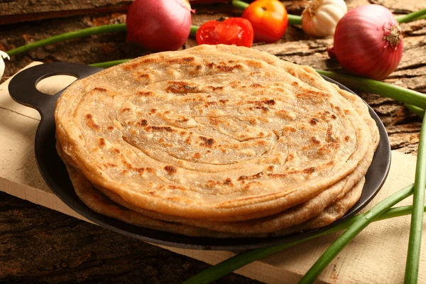

Chapati

Description
Chapati is a traditional Indian flatbread made from whole wheat flour, water, and salt, rolled into thin rounds and cooked on a hot griddle until golden brown. It's versatile, soft, and perfect for scooping up flavorful curries or as a wholesome wrap for various fillings.
Ingredients
- Whole wheat flour
- Water
- Salt
- Oil or ghee
Steps
- Prepare Dough: Mix whole wheat flour, salt, and water to form a smooth dough. Rest for 15-20 minutes.
- Divide and Roll: Divide dough into balls, roll each into thin discs (6-8 inches diameter).
- Cook: Heat a skillet, cook each chapati for 30 seconds on each side until light brown spots appear.
- Serve: Optionally brush with ghee or butter and serve hot with curries or vegetables.